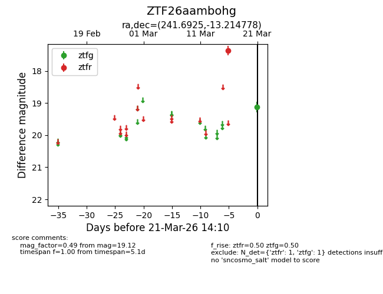
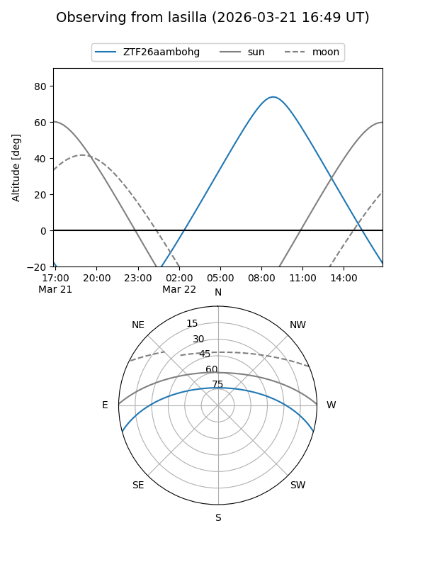
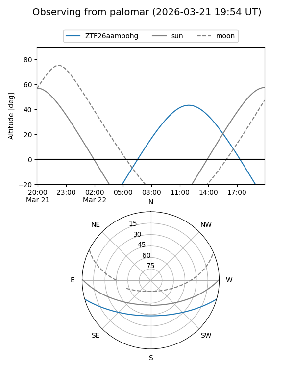

ZTF26aambohg
Target ZTF26aambohg at 2026-03-21 14:12
Aliases and brokers:
FINK: link
Lasair: link
ALeRCE: link
alt names
ZTF26aambohg (ztf,fink_ztf)
Coordinates:
equatorial (ra, dec) = 241.6925,-13.21478
equatorial (HMS+DMS) = 16:06:46.19,-13:12:53.20
galactic (l, b) = (358.8601,+27.78067)
Flags:
Photometry:
last ztfg=19.12, ztfr=17.37
1 ztfg, 1 ztfr detections
Lightcurve

Visibility


Additional plots